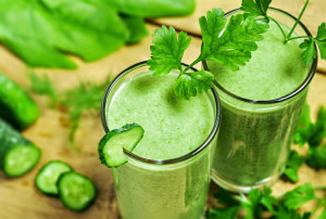

Ingredientes
- 1 taza de espinaca fresca
- 1 plátano maduro
- 1/2 taza de piña o mango
- 1 taza de agua o leche vegetal
- Miel o endulzante al gusto
Instrucciones
- Coloca todos los ingredientes en una licuadora.
- Licúa hasta obtener una mezcla suave y sin grumos.
- Prueba y ajusta el dulzor con miel o endulzante.
- Sirve y disfruta de un smoothie refrescante.